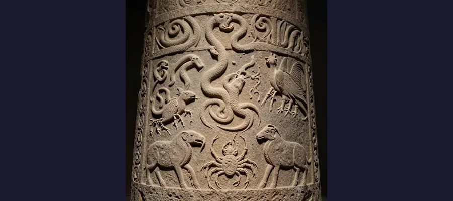
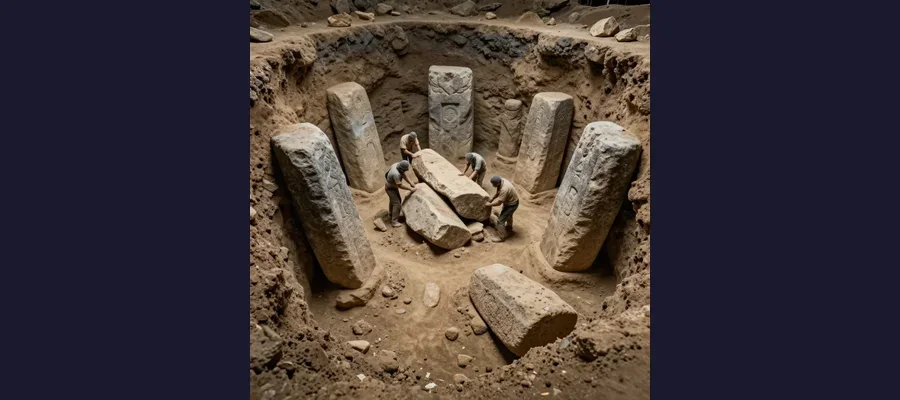

Gobekli Tepe: The World's First Temple!

These massive stone circles were built 12,000 years ago - before the pyramids, before Stonehenge, before farming!
Imagine a temple so old that it was already ancient when the Egyptians built the pyramids. A temple built by people who hadn't even invented farming yet. This place exists - and it's called Gobekli Tepe.
When archaeologists discovered this site in Turkey, it changed everything we thought we knew about human history. How did hunter-gatherers build something this massive and complex? And why did they bury it on purpose?
Overview
A Discovery That Changed History
In 1994, a shepherd noticed some strange stones sticking out of a hill in southeastern Turkey. He told archaeologists, and what they found was incredible: a massive temple complex buried under tons of dirt.
But the real shock came when they dated the stones. Gobekli Tepe was built around 9600 BCE - that's over 12,000 years ago! This makes it:
- 🏛️ 7,000 years older than the pyramids
- 🪨 6,000 years older than Stonehenge
- 🌾 Built before humans invented agriculture!

The pillars are covered with detailed carvings of animals - snakes, scorpions, vultures, and wild boars!
🧱 How Did They Build It?
The largest pillars weigh up to 50 tons - as much as 10 elephants! And these people didn't have wheels, metal tools, or even farming. They moved these massive stones by hand!
What Did They Find?
Gobekli Tepe contains about 20 circular enclosures, each surrounded by massive T-shaped stone pillars. The pillars are decorated with incredible carvings of animals:
- 🐍 Snakes slithering up the pillars
- 🦂 Scorpions with raised tails
- 🦅 Vultures with spread wings
- 🐗 Wild boars and foxes
- 🐆 Even lions and bulls!
These aren't rough scratchings - they're detailed, artistic carvings made by skilled craftsmen. But who were these artists? And why did they make this place?
Evidence
What Was It For?
Nobody lived at Gobekli Tepe - there are no houses, no cooking fires, no trash piles. It was purely a religious site. But what kind of religion?
The animal carvings might give us clues. Some experts think the different animals represented different clans or tribes. Perhaps Gobekli Tepe was a meeting place where different groups came together for ceremonies.
Others think it might have been a temple to the dead. The vulture carvings suggest sky burial - a practice where bodies are left for birds to consume. Maybe this was where ancient people honored their ancestors.
Competing Explanations
The Great Mystery: Why Was It Buried?

The entire complex was deliberately buried under tons of dirt and rubble - but nobody knows why!
Here's the strangest part: after using Gobekli Tepe for about 1,500 years, the ancient people deliberately buried the entire site. They filled the enclosures with dirt and rubble, covering their incredible creation forever.
Why would they do this? Some theories include:
🙏 Religious Ritual: Maybe burying the temples was part of their religion - a way of returning the sacred site to the earth.
⚠️ Danger or Fear: Perhaps something threatened them, and they hid their temple to protect it.
🔄 Moving On: Maybe they simply finished using the site and wanted to close it properly, like sealing a tomb.
🌍 It Changed Everything!
Before Gobekli Tepe, scientists thought people built temples AFTER they started farming. But this site proves the opposite: people came together to build temples FIRST, and farming developed later to feed the workers!
Open Questions
The Mystery Continues
Only about 5% of Gobekli Tepe has been excavated. There's still so much buried under that hill. What other secrets are waiting to be discovered?
Gobekli Tepe proves that ancient humans were far more advanced than we ever imagined. And it reminds us that there's still so much about our past that we don't understand!
📖 Recommended Reading
Want to learn more? Check out Gobekli Tepe: Genesis of the Gods on Amazon for a deeper dive into this fascinating topic. (As an Amazon Associate, we earn from qualifying purchases.)
References & Further Reading
- UNESCO World Heritage profile for Göbekli Tepe
- German Archaeological Institute fieldwork project overview
- JAS Reports (2020): stone trough function study
- Plant and Soil (2024): paleoecology around Göbekli Tepe
- Google Scholar literature search
Editorial note: interpretations evolve as excavation and conservation continue. See our Editorial Policy.